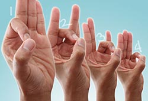

ေလ့က်င့္ ခန္း(၉)

၉။ လက္ ကို သင့္ ေရွ႕မွာ ထားပါ။ လက္ ေကာက္ ဝတ္ ကို ေျဖာင့္ ေန ေအာင္ ထားပါ။
လက္ မကို လက္ ညိဳးႏွင့္ အို ပံုသ႑ာန္ ျဖစ္ ေအာင္ ထိ၊ ျပန္ ဖယ္၊ လက္ မကို လက္ ခလယ္ ႏွင့္ ထိ၊ လက္ သၾကြယ္၊ လက္ သန္း အစဥ္ အတိုင္း ျပဳလုပ္ သြားပါ။
လက္ မ်ားထိ ေနခ်ိန္ မွာ မိနစ္ ဝက္ သို႕ တစ္ မိနစ္ ေလာက္ ၾကာ ေအာင္ ထားပါ။
လက္ တစ္ လက္ ကို ၄ၾကိမ္ ခန္႔ ျပဳလုပ္ ပါ။